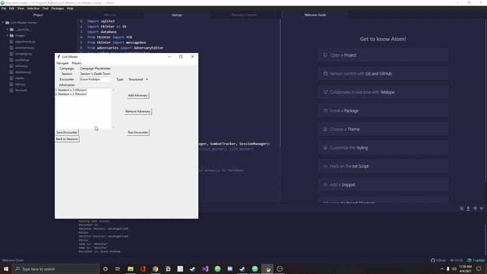

Lich Master
Lich Master is built in Python and helps manage tedious actions in the tabletop roleplaying game Genesys.
The first screen allows you to create a campaign in case you are running a game for multiple groups. The campaign section allows you to track players. You can also mark which players are present at a session and which are absent. This will help deal with those real life emergencies that often disrupt a classic dungeon adventure among friends. The stats set up here will be read during combat and help automate some other functions.
Once you have players, you can then start to populate your database with custom adversaries for your players to fight. These adversaries can later be loaded into a combat manager.
The session manager helps you plan for encouonters ahead of time. Load up the adversaries you previously created, and launch the encounter with a click of a button when your players are around.
The combat manager populates the relevant stats of the enemies you created previously. They can be damaged in combat. The damage takes into account the armor they are wearing. As a group of enemies is damaged by the players, they begin to drop in number and their offensive dice pool automatically decreases. They become weaker the less of them their are.
This game isn't all fun and games. Eventually, the enemies get to strike back. Select one of the weapons they were equipped with on creation and pick one of the players marked present at the encounter. A list is automatically generated. Modify the dice roll if any rules apply. The results then show. Genesys uses custom dice with symbols rather than a traditional RPG. A table generates showing what options are "purchasable" with the generated symbols.
Finally, any good tabletop combat system needs to track initiative. Initative is the order in which the players and non-player enemies act. Everyone would have to callout there relevant characteristics, roll the dice, and compare to everyone else at the table. Lich Master has already collected the relevant information. Everything is then taken care of with a single roll.